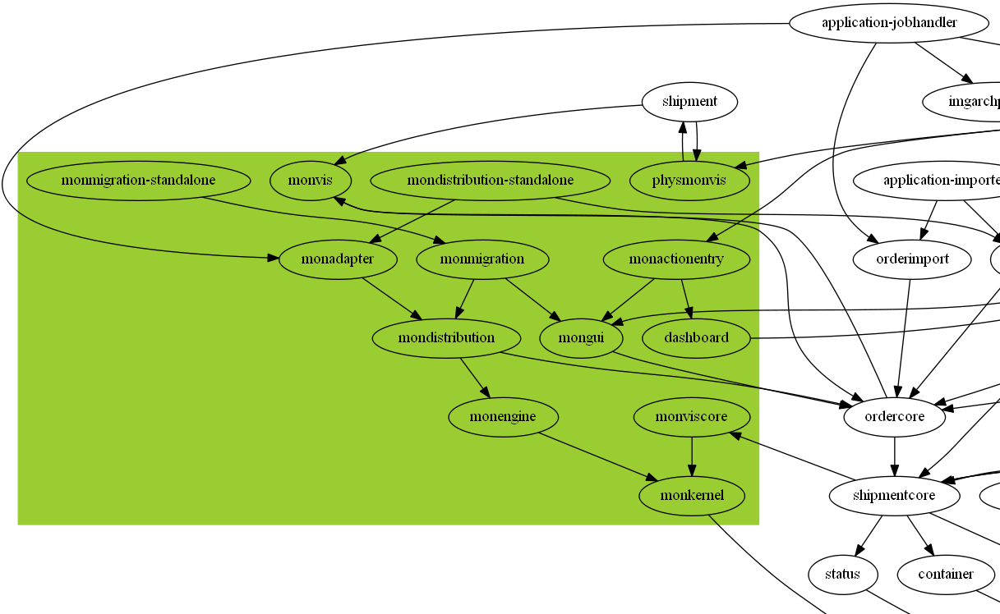

The rocky road
From Monolith
to Microservices
Bjoern KimminichSenior Manager IT Architecture
Kuehne + Nagel (AG & Co.) KG
Starring as "The Monolith"
Marketing Facts
Visibility
Keep track of your products, streamline operations and better manage your assets.
Monitoring
Proactive control to help you maintain your supply chain integrity and efficiency.
Collaboration
Improves the communication and collaboration with your supply chain partners.
Information Management
Business intelligence tools that convert your data into information for effective decision making.
SRP Violation...
...detected on marketing level!
Project Facts
- Ongoing development since 2007
- More than 1.500.000 lines of code
- 197+ developers over time
Historically grown system...
...detected on application level!
Technical Facts
- Self-made Java Web Framework
(by now out of commission) - Multiple UI Technologies
(JSP/jQuery, Swing/ULC, GWT/GXT, JSF) - Monolithic underlying database
(used for operations, visibility and reporting)
Legacy system...
...detected on architecture level!
Three Red Alerts
- Responsibility
- Maintenance
- Technology
How to turn the corner...?
#1: Restraint
Do not put more stuff into your monolith!
Fixes and small changes only!
No more new big features!

No facelift projects!
#2: Research
Find the seams in your monolith!
Components of KN Login
Product clusters
#3: Repercussion
Realize that most of your seams are just wishful thinking!
Transitive dependency hell

Cycle prevention components™
#4: Rehabilitation
Gradually extract/replace parts in spite of #3!
Seemingly low-hanging fruits
Well defined bounded context
Real pain spots
Back to the roots
Final Takeaway
The transition from a monolithic application to a microservice architecture is neither easy nor inexpensive, but it's worth the effort in order to keep the core systems of your company maintainable and extensible in the future!
Recommended Resources


THE END...?
MonolithFirst
THE END......?
Don't start with a monolith
THE END!
Credits
- Presentation created with reveal.js - The HTML Presentation Framework
- KN Login photos and diagrams by Kuehne + Nagel / All rights reserved
- USS Yorktown Red Light by Mr.TinDC / CC BY-SA 3.0
- Three road flares burning by Dvortygirl / CC BY-ND 2.0
- MonolithFirst by Martin Fowler / All rights reserved
- Don't start with a monolith by Stefan Tilkov / All rights reserved
- Other photos from StockSnap.io and Unsplash / CC0 1.0
{kind=link}